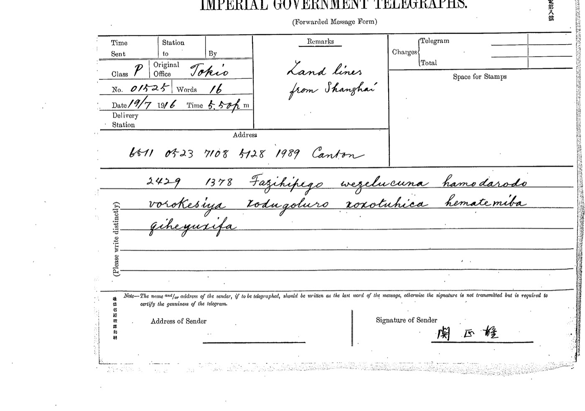

Cryptographie historique · Chine · Japon · 1916
文密
Le code Wenmi, déchiffré*
À l'été 1916, un émissaire chinois à Tokyo, Zhao Shen, négocie des fusils, des avions et des prêts japonais pour les provinces du Sud de la Chine en révolte. Ses télégrammes, chiffrés sous le nom de 文密 (Wenmi), sont interceptés et recopiés par l'administration japonaise, puis dorment pendant plus d'un siècle dans les archives diplomatiques de Tokyo. Les deux canaux qu'il employait en 1916 sont aujourd'hui lus, pour l'essentiel.
Le Wenmi de 1916 : les télégrammes de Zhao Shen entre Tokyo et le Sud de la Chine (juin–novembre 1916). Les télégrammes de juin 1917 qui portent le même nom (Sun Yat-sen ↔ Dai Jitao) emploient un autre système : ils ne sont pas déchiffrés.

2429 1378 se lisent 文密 en code télégraphique chinois ; viennent ensuite les mots chiffrés. Déchiffré : 報傳取消日人態度遽變確否速示俾便行止伸. JACAR B03050090000, image 0416.Article 1 · Contexte
Fusils, emprunts et télégrammes : la Chine de 1916 vue par un code secret
Qui étaient Sun Yat-sen, Yuan Shikai, le « Conseil des affaires militaires » ? Pourquoi un Chinois de Tokyo chiffrait-il ses messages, et pourquoi le Japon les recopiait-il ? Une introduction pour qui ne connaît pas l'histoire chinoise, puis ce que disent les télégrammes.
Lire l'article →Article 2 · Write-up technique
Casser le Wenmi : de la structure des lettres à deux clés sans paramètre
Transcription aveugle, tests sans clé, recuit simulé sous contraintes, validation sur des messages tenus à l'écart, et enfin les grilles G0 et Y0. Les impasses comptent : on les détaille, avec les outils et le code.
Lire le write-up →Corpus
Les télégrammes, un par un
Les dix-sept télégrammes transcrits et décodés, caractère par caractère : ce qui est sûr, ce qui est confirmé, ce qui reste douteux, et les erreurs de Morse ou de copie qui pourraient l'expliquer.
Voir les télégrammes →Prolongement
Les télégrammes à condensateur de 1916 relus
Les télégrammes de mars–mai 1916 du cercle de Sun Yat-sen, dont le déchiffrement est déjà publié, relus lettre par lettre sur les scans : 21 caractères rectifiés, un mot manquant rétabli, Morrison, Liao Zhongkai et plusieurs dates identifiés.
Voir les corrections →Où en est-on ?
Les deux canaux de 1916 sont déchiffrés dans leur principe : dans chacun, une grille régulière transforme chaque demi-code télégraphique en une syllabe.
- Tokyo → Zhaoqing (juin–septembre, 7 télégrammes, grille G0) : texte fixé pour l'essentiel : 12 caractères douteux sur 351 (3,4 %), 7 après les propositions de lecture (2,0 %), marqués.
- Tokyo ↔ Yunnan (juillet–novembre, 15 formulaires, grille Y0, cassée le 11 octobre 2026) : texte entièrement relu par un humain : 31 caractères douteux ou illisibles sur 456 (6,8 %), 13 après les propositions de lecture (2,9 %).
- Les télégrammes à condensateur de mars–mai 1916 (déchiffrés et publiés[1, 2]) ont été relus sur les scans : 28 caractères corrigés (Condensateurs 1916).
- Les messages de 1917 portant le même nom (Sun Yat-sen ↔ Dai Jitao) ne sont pas déchiffrés : ils emploient un autre alphabet.